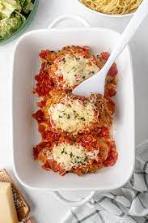

Chicken Parmesan
This classic Italian dish is sure to impress your dinner guests. It's easy to make and packed with flavor.
Get the RecipeDiscover delicious recipes and cooking tips from around the world.
This classic Italian dish is sure to impress your dinner guests. It's easy to make and packed with flavor.
Get the RecipeDelicious pizza with fresh ingredients.
Mouth-watering sushi rolls.
A refreshing salad with colorful vegetables.
A tempting chocolate cake with raspberries.